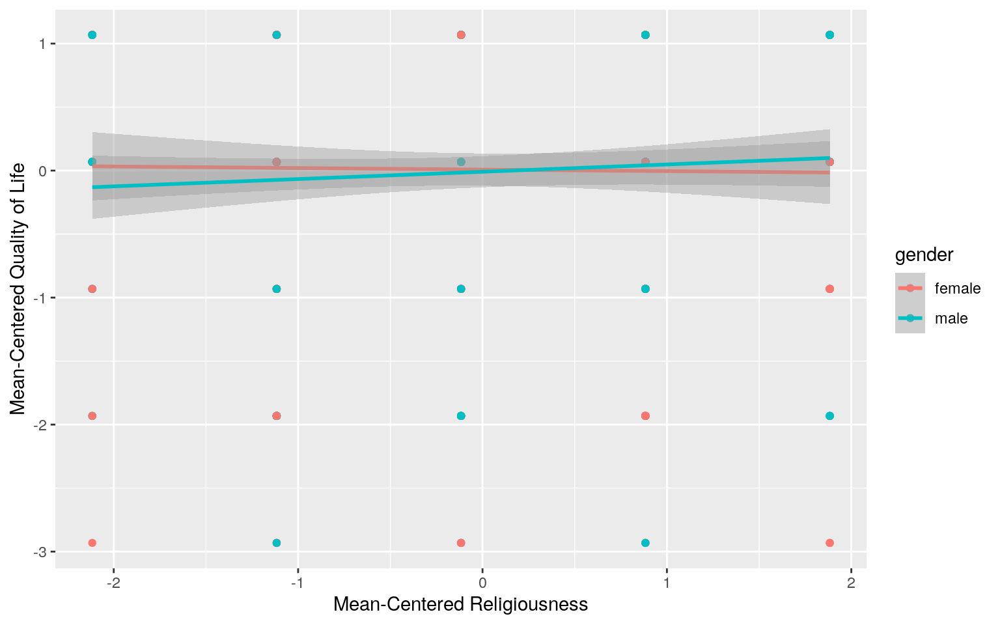

library(readxl)
Affairs <- read_excel("Affairs.xlsx")
#View(Affairs)***Hello! My dataset is a cross-section data of married people from a survey conducted by Psychology Today in 1969. It was about extramarital affairs, but the amount of factos allows for lots of correlations to be tested of married people. It contains nine variable: affairs, gender, age, years married, children, religiousness, education, occupation, and rating of their life. The survey asked 601 participants. Only 2 variables are numeric: religiousness and rating. The rest are categorical, despite it being in number form they are in discrete groups.
The variables break down like this:
affairs = How often engaged in extramarital sexual intercourse during the past year?
gender= male or female
age = numeric variable coding age in years: 17.5 = under 20, 22 = 20–24, 27 = 25–29, 32 = 30–34, 37 = 35–39, 42 = 40–44, 47 = 45–49, 52 = 50–54, 57 = 55 or over.
yearsmarried = numeric variable coding number of years married: 0.125 = 3 months or less, 0.417 = 4–6 months, 0.75 = 6 months–1 year, 1.5 = 1–2 years, 4 = 3–5 years, 7 = 6–8 years, 10 = 9–11 years, 15 = 12 or more years.
children= do you have children? yes or no.
religiousness = numeric variable coding religiousness: 1 = anti, 2 = not at all, 3 = slightly, 4 = somewhat, 5 = very.
education = numeric variable coding level of education: 9 = grade school, 12 = high school graduate, 14 = some college, 16 = college graduate, 17 = some graduate work, 18 = master’s degree, 20 = Ph.D., M.D., or other advanced degree.
occupation = numeric variable coding occupation according to Hollingshead classification (reverse numbering).
rating = numeric variable coding self rating of marriage: 1 = very unhappy, 2 = somewhat unhappy, 3 = average, 4 = happier than average, 5 = very happy.***
If they do, perform univariate ANOVAs to find response(s) showing a mean difference across groups (3), and perform post-hoc t tests to find which groups differ (3).
Discuss the number of tests you have performed, calculate the probability of at least one type I error (if unadjusted), and adjust the significance level accordingly (bonferroni correction) before discussing significant differences (3).
Briefly discuss some of the MANOVA assumptions and whether or not they are likely to have been met here (no need for anything too in-depth) (2).
#manova
manAffairs <- manova(cbind(religiousness,rating)~gender, data=Affairs)
summary(manAffairs)## Df Pillai approx F num Df den Df Pr(>F)
## gender 1 0.00011846 0.035423 2 598 0.9652
## Residuals 599#univariate Anova and post-hoc t-test
summary.aov(manAffairs)## Response religiousness :
## Df Sum Sq Mean Sq F value Pr(>F)
## gender 1 0.05 0.04823 0.0353 0.851
## Residuals 599 817.80 1.36527
##
## Response rating :
## Df Sum Sq Mean Sq F value Pr(>F)
## gender 1 0.04 0.04133 0.0339 0.854
## Residuals 599 730.16 1.21897pairwise.t.test(Affairs$religiousness,Affairs$gender, p.adj="none")##
## Pairwise comparisons using t tests with pooled SD
##
## data: Affairs$religiousness and Affairs$gender
##
## female
## male 0.85
##
## P value adjustment method: nonepairwise.t.test(Affairs$rating,Affairs$gender, p.adj="none")##
## Pairwise comparisons using t tests with pooled SD
##
## data: Affairs$rating and Affairs$gender
##
## female
## male 0.85
##
## P value adjustment method: none#tests, probability of error
1-(0.95^5)## [1] 0.22621910.05/5## [1] 0.01pairwise.t.test(Affairs$religiousness,Affairs$gender, p.adj="none")$p.value<0.05/5## female
## male FALSEpairwise.t.test(Affairs$rating,Affairs$gender, p.adj="none")$p.value<0.05/5## female
## male FALSEI did a manova to test the mean difference in religiousness and rating of quality of life based on identified gender. THe results showed there was no significant differences in religiousness or rating of quality of life depending on gender (p=0.9652). I still ran a univariate ANOVA test to find responses showing a mean difference across the groups. I found that religiousness in gender had a p value of 0.851, making it insignificant. I also found that rating in gender had a p value of 0.854, also making it insignificant. I then performed post-hoc t-tests to show which groups differ by gender. This required the Bonferroni correction for the number of tests performed (which was 5, 1 MANOVA, 2 univariate ANOVAs and 2 post-hoc) because the probability of making a Type I error was 1-(0.95)^5, or 0.2262191. After adjustment (0.05/5= 0.1) to the significance level it’s proven none of the tests are significant. The dataset meets most of the assumptions for the MANOVA test like random samples, no extreme outliers, independent observations. but there may not be a normal distribution,equal variance, or even a linear relationship between the religiousness and rating of quality of life by gender.
Affairs%>%group_by(gender)%>%summarize(means=mean(rating))%>%summarize('mean_diff'= diff(means)) #-0.01660562## # A tibble: 1 x 1
## mean_diff
## <dbl>
## 1 -0.0166rand_dist<- vector()
for(i in 1:5000){
new<- data.frame(rating=sample(Affairs$rating), gender=Affairs$gender)
rand_dist[i] <- mean(new[new$gender == "male",]$rating)-mean(new[new$gender == "female",]$rating)
}
mean(rand_dist < -0.01660562 | rand_dist > 0.01660562)## [1] 0.8582{hist(rand_dist,main ="",ylab=""); abline(v = c(-0.01660562, 0.01660562), col="red")}I used a mean difference randomization test. The null hypothesis is the rating of quality of life will be the same between females and males. THe alternative hypothesis is that the rating of quality of life differs between females and males. The tests gave a p-value greater than 0.05 (p= 0.8566), meaning the null hypothesis is not rejected, meaning there is not a significant difference in the rating of quality of life between females and males.
3. (40 pts) Build a linear regression model predicting one of your response variables from at least 2 other variables, including their interaction. Mean-center any numeric variables involved in the interaction.
ggplot() using geom_smooth(method=“lm”). If your interaction is numeric by numeric, refer to code in the slides to make the plot or check out the interactions package, which makes this easier. If you have 3 or more predictors, just chose two of them to plot for convenience. (10)coeftest(..., vcov=vcovHC(...)). Discuss significance of results, including any changes from before/after robust SEs if applicable. (10)Affairs<-Affairs%>%mutate(meanRating=rating-mean(rating),meanReligousness=religiousness-mean(religiousness))
f2 <- lm(meanRating ~ meanReligousness*gender, data=Affairs); summary(f2)##
## Call:
## lm(formula = meanRating ~ meanReligousness * gender,
data = Affairs)
##
## Residuals:
## Min 1Q Median 3Q Max
## -2.97333 -0.91652 0.07124 1.04676 1.19913
##
## Coefficients:
## Estimate Std. Error t value Pr(>|t|)
## (Intercept) 0.007798 0.062252 0.125 0.900
## meanReligousness -0.012241 0.054945 -0.223 0.824
## gendermale -0.017042 0.090242 -0.189 0.850
## meanReligousness:gendermale 0.069728 0.077274 0.902
0.367
##
## Residual standard error: 1.105 on 597 degrees of freedom
## Multiple R-squared: 0.002011, Adjusted R-squared:
-0.003004
## F-statistic: 0.401 on 3 and 597 DF, p-value: 0.7524ggplot(Affairs, aes(x=meanReligousness, y=meanRating,group=gender))+geom_point(aes(color=gender))+
geom_smooth(method="lm",aes(color=gender))+xlab("Mean-Centered Religiousness")+ylab("Mean-Centered Quality of Life")
f2residuals<-f2$residuals
f2fit<-f2$fitted.values
ggplot()+geom_point(aes(f2fit,f2residuals))+geom_hline(yintercept=0, color='red')ggplot()+geom_histogram(aes(f2residuals), bins=20)ggplot()+geom_qq(aes(sample=f2residuals))+geom_qq_line(aes(sample=f2residuals))shapiro.test(f2residuals)##
## Shapiro-Wilk normality test
##
## data: f2residuals
## W = 0.85704, p-value < 2.2e-16library(sandwich)
library(lmtest)
bptest(f2)##
## studentized Breusch-Pagan test
##
## data: f2
## BP = 3.0425, df = 3, p-value = 0.3851summary(f2)$coef%>%round(4)## Estimate Std. Error t value Pr(>|t|)
## (Intercept) 0.0078 0.0623 0.1253 0.9004
## meanReligousness -0.0122 0.0549 -0.2228 0.8238
## gendermale -0.0170 0.0902 -0.1888 0.8503
## meanReligousness:gendermale 0.0697 0.0773 0.9024 0.3672coeftest(f2, vcov = vcovHC(f2))##
## t test of coefficients:
##
## Estimate Std. Error t value Pr(>|t|)
## (Intercept) 0.0077977 0.0649841 0.1200 0.9045
## meanReligousness -0.0122405 0.0583155 -0.2099 0.8338
## gendermale -0.0170416 0.0901597 -0.1890 0.8501
## meanReligousness:gendermale 0.0697279 0.0768063 0.9078
0.3643THe first thing to note here is that my numeric variables of religiousness and rating of quality of life were discrete, it was a number on a scale from 1-5, which causes the graphs to show up a little different. I used a linear regression model to predict gender relative to the rating of quality of life and religiousness. The coefficient estimates show that for women the average rating of quality of life is 0.0078 when religiousness is zero. For every one unit increase in religiousness, rating of quality of life goes down by 0.01224 for females. Also, males with a religiousness rating of zero have a predicted rating of quality of life that is -0.0170416. The slope of religiousness on rating of quality of life is 0.06972 higher than females. When checking assumptions for homoskedasticity, the model does not display linearity or homoskedasticity via graphically and using a hypothesis test, nor does it pass the normality assumption. Meaning the model is not satisfactory. Using robust standard errors, the relationship tested did not change in values, but the p-value did change to p>0.05.
From the adjusted R-squared of the linear model created, we see that 38.73% of the total variation this model can explain. There is a weak linearity according to the model, the residual plot shows the data does not meet the assumption of homoskedasticity, despite being fitted. This is also due to the fact that these are discrete numeric variables, but even taking that into account it does not meet the assumption. Since the p value was 0.9416 (through the Breusch-Pagan test), the data was not significant. There was also a lack of normal distribution on the histogram, more of an upward trend between the variables, and the Q-Q plot not following the trend line for each discrete variable. This was also verified with the Shapiro-Wilk test.
set.seed(348)
f2<-lm(meanRating ~ meanReligousness*gender, data=Affairs)
f2residuals<-f2$residuals
f2fit<-f2$fitted.values
r<-replicate(5000,{
r2<-sample(f2residuals,replace=TRUE)
Affairs$nRate<-f2fit+r2
f2<-lm(nRate~meanReligousness*gender, data=Affairs)
coef(f2)
})
r%>%t%>%as.data.frame%>%summarize_all(sd)%>%pivot_longer(1:4,names_to = "Coefficient", values_to = "Bootstrapped SE")## # A tibble: 4 x 2
## Coefficient `Bootstrapped SE`
## <chr> <dbl>
## 1 (Intercept) 0.0628
## 2 meanReligousness 0.0554
## 3 gendermale 0.0903
## 4 meanReligousness:gendermale 0.0785summary(f2)$coef%>%round(4)## Estimate Std. Error t value Pr(>|t|)
## (Intercept) 0.0078 0.0623 0.1253 0.9004
## meanReligousness -0.0122 0.0549 -0.2228 0.8238
## gendermale -0.0170 0.0902 -0.1888 0.8503
## meanReligousness:gendermale 0.0697 0.0773 0.9024 0.3672coeftest(f2, vcov = vcovHC(f2))##
## t test of coefficients:
##
## Estimate Std. Error t value Pr(>|t|)
## (Intercept) 0.0077977 0.0649841 0.1200 0.9045
## meanReligousness -0.0122405 0.0583155 -0.2099 0.8338
## gendermale -0.0170416 0.0901597 -0.1890 0.8501
## meanReligousness:gendermale 0.0697279 0.0768063 0.9078
0.3643There was no significant changes in bootstrapped standard errors or p- values compared to the original SEs or the robust SEs. BUT there was a very small difference of the bootstrapped SEs difference with the robust SEs being a smidge larger than the bootstrapped SEs difference with the original SEs. But the difference is so small, it has no evidence of meaning anything significant. DUe to these minuscule changes we can assume the p-values in either comparison do not change significantly either.
5. (30 pts) Fit a logistic regression model predicting a binary variable (if you don’t have one, make/get one) from at least two explanatory variables (interaction not necessary).
data<-Affairs%>%mutate(y=ifelse(meanRating>0,0,1),outcome=ifelse(meanRating>0,0,1))
limlog<-glm(y~meanReligousness+gender, data=data, family=binomial)
coeftest(limlog)##
## z test of coefficients:
##
## Estimate Std. Error z value Pr(>|z|)
## (Intercept) -0.8856608 0.1239261 -7.1467 8.89e-13 ***
## meanReligousness -0.0200067 0.0769520 -0.2600 0.7949
## gendermale -0.0086378 0.1798149 -0.0480 0.9617
## ---
## Signif. codes: 0 '***' 0.001 '**' 0.01 '*' 0.05 '.' 0.1
' ' 1exp(coeftest(limlog))##
## z test of coefficients:
##
## Estimate Std. Error z value Pr(>|z|)
## (Intercept) 0.41244 1.13193 0.0008 1.000
## meanReligousness 0.98019 1.07999 0.7711 2.214
## gendermale 0.99140 1.19700 0.9531 2.616#Confusion matrix
probs<-predict(limlog,type="response")
table(predict=as.numeric(probs>.5),truth=data$y)%>%addmargins## truth
## predict 0 1 Sum
## 0 426 175 601
## Sum 426 175 601data$prob <- predict(limlog,type="response")
data$predicted <- ifelse(data$prob>.5,"Less than 3 Rating","3 or More Rating")
data$outcome<-factor(data$outcome,levels=c("0","1")) #rename
levels(data$outcome) <- c("Less than 3 Rating", "3 or More Rating") #rename
table(truth=data$outcome, prediction=data$predicted)%>%addmargins## prediction
## truth 3 or More Rating Sum
## Less than 3 Rating 426 426
## 3 or More Rating 175 175
## Sum 601 601class_diag(data$prob,data$outcome)## acc sens spec ppv auc
## 3 or More Rating 0.7088186 0 1 NaN 0.5072099data$logit<-predict(limlog)
#Density Plot
ggplot(data,aes(logit, fill=outcome))+geom_density(alpha=.3)+geom_rug(aes(logit,color=outcome))+
geom_vline(xintercept=0,lty=2)+theme(legend.position=c(.125,.875))+xlab("logit (log-odds)")#ROC curve and AUC
library(plotROC)
ROCplot<-ggplot(data)+geom_roc(aes(d=outcome,m=prob), n.cuts=0)+geom_segment(aes(x=0,y=0,xend=1,yend=1),lty=2)+xlab("FPR")+ylab("TPR")
ROCplotcalc_auc(ROCplot)## PANEL group AUC
## 1 1 -1 0.4927901I used a logistic regression to predict the odds of a participant having a result of less than 3 of religiousness based on gender. Using a significance level of 0.05, none of the groups are of interest. It shows males have an coefficient estimate of -0.0885 of religiousness at the intercept. The intercept predicts the mens level of religiousness decrease with the increase of their rating of quality of life. This is quite interesting. THe odds of having less than a 3 on the religious survey as quality of life increases is 38%. When i created a confusion matrix, it showed the accuracy of the model predicting quality of life by religiousness scoring 29.11% (175/601). The ROC curve/ AUC calculation show a strong trend line and a AUC of 0.507 meaning it shows a strong predictor between religiousness and quality of life.
6. (25 pts) Perform a logistic regression predicting the same binary response variable from ALL of the rest of your variables (the more, the better!)
lambda.1se). Discuss which variables are retained. (5)dataf<-Affairs%>%mutate(y=ifelse(meanRating>0,0,1),outcomef=ifelse(meanRating>0,0,1))
log<-glm(y~meanReligousness+gender+affairs+yearsmarried+children+education+occupation, data=dataf, family=binomial)
coeftest(log)##
## z test of coefficients:
##
## Estimate Std. Error z value Pr(>|z|)
## (Intercept) 0.499263 0.669068 0.7462 0.455543
## meanReligousness -0.035823 0.084313 -0.4249 0.670922
## gendermale 0.176205 0.217917 0.8086 0.418753
## affairs 0.118297 0.027371 4.3219 1.547e-05 ***
## yearsmarried 0.042312 0.021078 2.0073 0.044714 *
## childrenyes 0.269898 0.268796 1.0041 0.315330
## education -0.148214 0.046407 -3.1938 0.001404 **
## occupation 0.035052 0.065705 0.5335 0.593707
## ---
## Signif. codes: 0 '***' 0.001 '**' 0.01 '*' 0.05 '.' 0.1
' ' 1exp(coeftest(log))##
## z test of coefficients:
##
## Estimate Std. Error z value Pr(>|z|)
## (Intercept) 1.64751 1.95242 2.1090 1.577
## meanReligousness 0.96481 1.08797 0.6538 1.956
## gendermale 1.19268 1.24348 2.2447 1.520
## affairs 1.12558 1.02775 75.3331 1.000
## yearsmarried 1.04322 1.02130 7.4435 1.046
## childrenyes 1.30983 1.30839 2.7295 1.371
## education 0.86225 1.04750 0.0410 1.001
## occupation 1.03567 1.06791 1.7048 1.811dataf$probf <- predict(log,type="response")
dataf$predictedf <- ifelse(dataf$probf>.5,"Less than 3 Rating","3 or More Rating")
dataf$outcomef<-factor(dataf$outcomef,levels=c("0","1"))
levels(dataf$outcomef) <- c("Less than 3 Rating","3 or More Rating")
table(truth=dataf$outcomef, prediction=dataf$predictedf)%>%addmargins## prediction
## truth 3 or More Rating Less than 3 Rating Sum
## Less than 3 Rating 408 18 426
## 3 or More Rating 143 32 175
## Sum 551 50 601class_diag(dataf$probf,dataf$outcomef)## acc sens spec ppv auc
## 3 or More Rating 0.7321131 0.1828571 0.9577465 0.64
0.6587592set.seed(348)
k=10
dat<-dataf[sample(nrow(dataf)),]
folds<-cut(seq(1:nrow(dataf)),breaks=k,labels=F)
diags<-NULL
for(i in 1:k){
train<-dat[folds!=i,]
test<-dat[folds==i,]
truth<-test$y
fitf<-glm(y~rating+gender+affairs+yearsmarried+children+education+occupation,data=train,family="binomial")
probs<-predict(fitf,newdata = test,type="response")
diags<-rbind(diags,class_diag(probs,truth))
}
diags%>%summarize_all(mean)## acc sens spec ppv auc
## 1 1 1 1 1 1library(glmnet)
set.seed(348)
y<-as.matrix(dataf$y)
x<-model.matrix(y~meanReligousness+gender+affairs+yearsmarried+children+education+occupation,data=dataf)[,-1]
cv<-cv.glmnet(x,y)
{plot(cv$glmnet.fit, "lambda", label=TRUE); abline(v = log(cv$lambda.1se)); abline(v = log(cv$lambda.min),lty=2)}cv<-cv.glmnet(x,y,family="binomial")
lasso<-glmnet(x,y,family="binomial",lambda=cv$lambda.1se)
coef(lasso)## 8 x 1 sparse Matrix of class "dgCMatrix"
## s0
## (Intercept) -0.955112165
## meanReligousness .
## gendermale .
## affairs 0.062530785
## yearsmarried 0.008820769
## childrenyes .
## education -0.006598649
## occupation .set.seed(348)
k=10
dat<-dataf[sample(nrow(dataf)),]
folds<-cut(seq(1:nrow(dataf)),breaks=k,labels=F)
diags<-NULL
for(i in 1:k){
train<-dat[folds!=i,]
test<-dat[folds==i,]
truth<-test$y
fitf<-glm(y~rating,data=train,family="binomial")
probs<-predict(fitf,newdata = test,type="response")
diags<-rbind(diags,class_diag(probs,truth))
}
diags%>%summarize_all(mean)## acc sens spec ppv auc
## 1 1 1 1 1 1The accuracy, sens, spec, ppv, and auc respectively was 0.7321131, 0.1828571, 0.9577465, 0.64, 0.6587592. The model showed that increasing quality of life decreases religiousness in males. The accuracy, sens, spec, ppv, and auc all prove that the model is a good predictor of the data and is consistent. After performing the 10-fold CV, where the accuracy (1), sensitivity (1), specificity (1), precision (1), and AUC (1), shows the model is incredibly accurate in predicting, without correction. The LASSO had small coefficients but the most accurate lambda. The simple model also had a accuracy (1), sensitivity (1), specificity (1), precision (1), and AUC (1). Making it equal to the 10-fold model in their predictions. Overall the best models are the 10-fold and the simple, but they’re all great predictor models! Also the only values retained after conducting the LASSO were affairs, years married, and education.
data(package = .packages(all.available = TRUE))